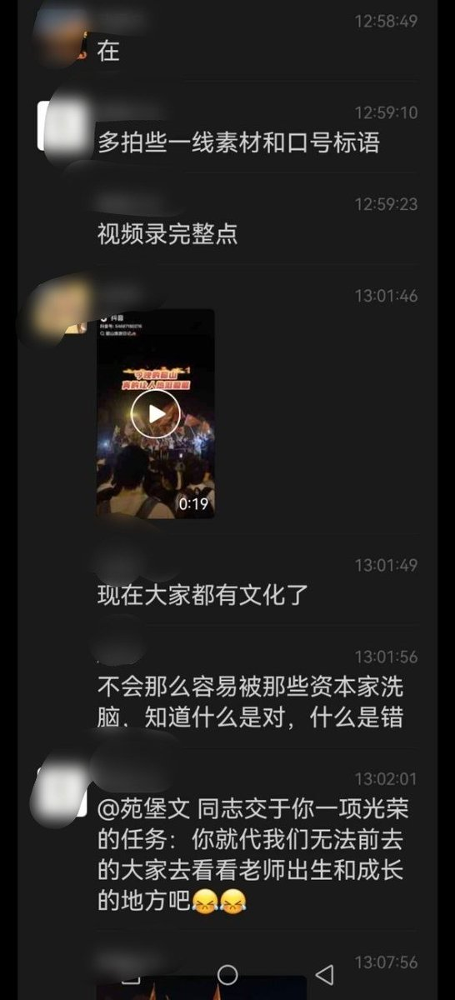

𝐀𝐬𝐡𝐥𝐞𝐲 𝐁𝐥𝐨𝐜𝐤🍥🌹🇹🇼🏳️⚧️🇪🇺
@bolckAshley
對於你國飽受壓迫與壓抑的年輕人來說也就當壓力洩閥口了，老共也算寬厚人了，起碼給了這幫人玩點Cosplay的自由🌚
不過還是得說，沒必要把這種建制默許的每年兩次的「特殊景觀」當成什麼群眾政治運動，這種「擺在櫥窗裡的遊行」並不會對你國的現狀有什麼改善👋

李老师不是你老师
@whyyoutouzhele
9月9日，有网友晒出一组湖南韶山现场视频及群聊记录。群聊中有人称，毛泽东逝世50周年纪念活动期间，现场“旗子有字的都收了”，还“上了信号屏蔽器”。 https://t.co/gljMzxLlnG https://t.co/gszGQQVurg